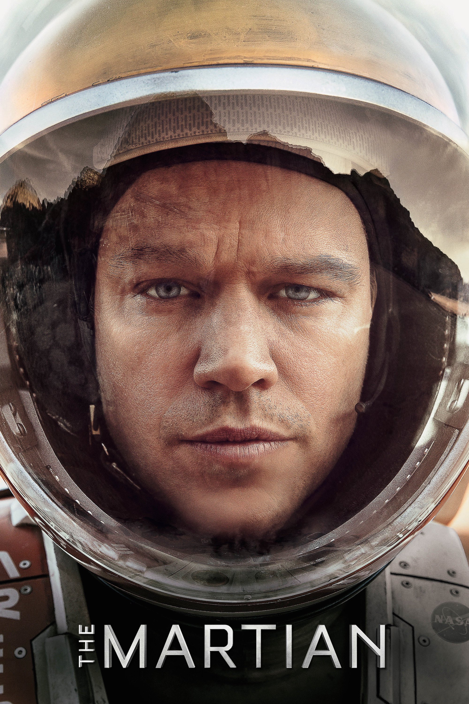

In 2035 the crew of the Ares III manned mission to Mars is on sol 18 of their 31-sol expedition. A severe dust storm forces them to return to their orbiting vessel Hermes. During the evacuation, astronaut Mark Watney is struck by debris and lost in the storm; the last telemetry from his suit indicates that it has lost pressure, with no life signs. With the remaining crew in peril, mission commander Melissa Lewis gives the order to launch without him. Watney awakens after the storm and makes his way to the "Hab", the crew's Mars living quarters. He removes a piece of antenna from his stomach and suit's biomonitor, which caused the erroneous life-sign readings, and begins a video diary. He realizes that his only chance of rescue will be the arrival of the Ares IV crew in four years. Calculating that he has enough food to last only 300 Martian solar days, Watney, a botanist, improvises a farm with Martian soil fertilized with vacuum-packed toilet waste, water produced by extracting hydrogen from leftover rocket fuel then oxidized by burning, and potatoes saved for a Thanksgiving meal. He begins to modify the one functional rover to make long journeys across Mars. Reviewing satellite photos of Mars, mission director Vincent Kapoor and satellite planner Mindy Park realize that Watney has survived. Over the objections of Hermes flight director Mitch Henderson, NASA director Teddy Sanders decides not to inform the Ares III crew, believing it would distract them from their mission. Watney takes the rover to retrieve the Pathfinder probe, which fell silent in 1997. Using the lander's rotating still camera, he establishes rudimentary communication with the JPL team. NASA instructs Watney to modify the rover to link with Pathfinder, allowing them to communicate via text. When Watney is angry that the crew has not been told of his survival, Sanders authorizes Henderson to inform them. Lewis feels guilt-ridden over leaving Watney behind. Henderson and JPL director Bruce Ng formulate a plan to send a space probe to Mars and resupply Watney with enough food to survive until Ares IV's arrival. When the Hab airlock explosively decompresses, destroying Watney's crop, Sanders orders the team to accelerate the supply mission by skipping safety inspections. The supply probe explodes after liftoff. The China National Space Administration (CNSA) offers NASA the Taiyang Shen, a classified booster that can carry a payload to Mars. Meanwhile, JPL astrodynamicist Rich Purnell determines a trajectory to send Hermes back to Mars more quickly, using the Chinese booster to instead resupply it for an additional eighteen-month journey. Sanders rejects the plan, refusing to risk the crew, but Henderson surreptitiously sends the details of Purnell's plan to Hermes. Sanders privately supports this idea, but informs Henderson that he expects Henderson's resignation once the mission is over. Lewis and her crew vote unanimously to execute the plan, and NASA – powerless to stop them – proceeds with the resupply as Hermes flies by Earth, using its gravity to slingshot them back to Mars. After 461 sols, Watney begins the 90-sol journey to Schiaparelli crater, where the Mars Ascent Vehicle (MAV) for the Ares IV mission was previously landed. Much of his journey takes place in the Oxia Palus quadrangle of Mars. To rendezvous with Hermes' fly-by, Watney must make drastic modifications to reduce its mass, removing non-essential equipment including the vessel's windows, nose cone, and exterior panels. With Watney on board the gutted MAV, the Hermes crew launches it remotely, but not at the planned speed and distance. Hermes uses its maneuvering thrusters to change course and explosive decompression of its own internal atmosphere to adjust its speed. Lewis uses a MMU to approach Watney's vessel as closely as her tether will allow, but is unable to reach him. Watney pierces the glove of his pressure suit and uses the escaping air as a miniature thruster to reach Lewis. The crew is reunited as crowds around the world cheer the news. After returning to Earth, Watney begins a new life as a survival instructor for new astronaut candidates. Years later on the occasion of the Ares V mission launch, those involved in Watney's rescue have returned to their lives or begun new lives.
The Martian
